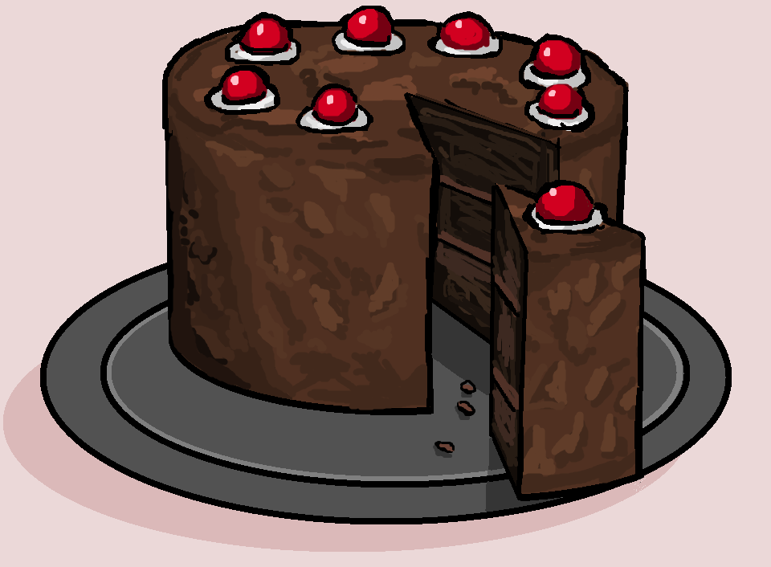

Full Recipe & Sources
This page provides a simplified version of the full Black Forest cake recipe in one place for easy reference. If you already understand the step-by-step process, you can use this page as a quick guide while baking. Sources used for recipe background and information are also included below.

Full Recipe
Ingredients
- 2 cups all-purpose flour
- 1 ¾ cups sugar
- ¾ cup cocoa powder
- 2 eggs
- 1 cup milk
- ½ cup vegetable oil
- 1 teaspoon vanilla extract
- 1 teaspoon baking powder
- 2 cups heavy whipping cream
- 2 tablespoons powdered sugar
- 1 can cherries
- Chocolate shavings
Instructions
- Preheat the oven to 350°F (175°C).
- Grease cake pans and prepare all ingredients.
- Mix dry and wet ingredients to create the chocolate cake batter.
- Pour the batter evenly into the cake pans and bake until done.
- Allow the cake layers to cool completely.
- Whip cold heavy cream with powdered sugar until stiff peaks form.
- Drain and prepare the cherries.
- Layer the cake with whipped cream and cherries between each layer.
- Cover the outside with whipped cream.
- Decorate with chocolate shavings and cherries.
Sources
Jack and Beyond – The Surprising History of Black Forest Cake